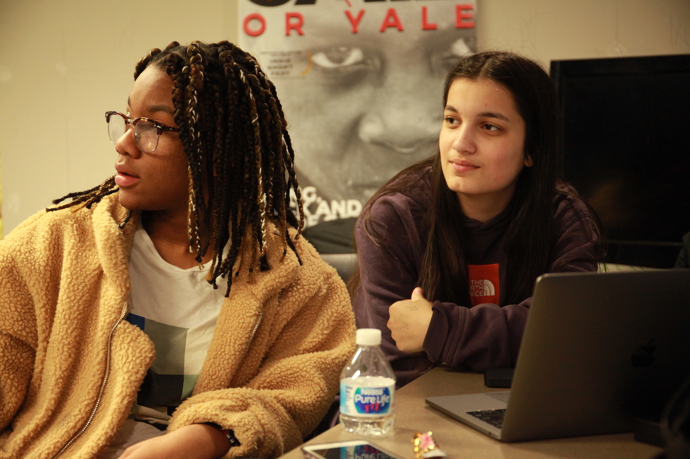

YPRPT: Documentary Film Screenings
June 17, 2020
 In partnership with the TREE Lab in Northwestern’s School of Education and Social Policy, the Block Museum presented a special online screening, on June 17, 2020, of three documentaries produced by students of the Young People’s Race, Power, and Technology (YPRPT) project. YPRPT is an afterschool program, developed in partnership with community partners including Evanston Township High School, Family Matters, Endangered Peace, and the Lucy Parsons Labs, that brings together NU undergraduate students with youth and community members to jointly investigate the ethical and social dimensions of specific law enforcement technologies such as facial recognition and gang databases.
The screening was introduced by professors Sepehr Vakil (Northwestern University) and Raphael Nash (DePaul University), followed by a live panel discussion between the YPRPT student filmmakers. The conversation was moderated by Jessica Marshall (PhD student in Learning Sciences at Northwestern University School of Education and Social Policy).
Read more